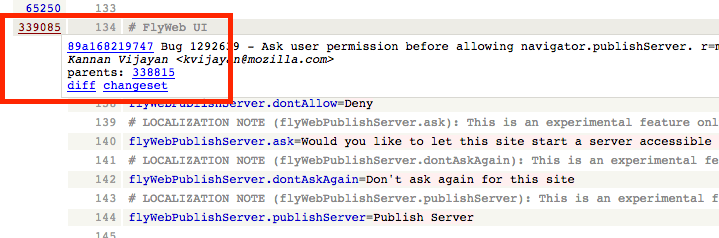
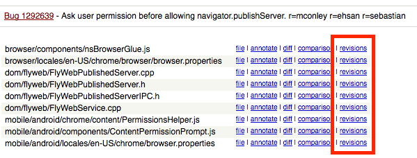

How to identify the bug that introduced a string
Sometimes it’s helpful to identify which bug introduced a specific string, for example to check if an issue was already reported, or find more background on a feature.
Find the string
The first step is to identify where the string is within the Mercurial repository, and the fastest way is to use Transvision.
For example, if you want to know which bug introduced the string Would you like to let this site start a server accessible to nearby devices and people?, you can search for the string or the identifier (if you already know it).
In the results, you can use the <source> link in the en-US column to open the file in Mercurial.
Find the bug
At the top of the page there’s an annotate link that will display the changeset associated to each line.
At this point you only need to search in the page for the string, hover the link on the leftmost column, and open the bug (if an active link is available in the commit message), or select the changeset link in the popup. The commit message will always have a bug reference, and you can then check dependencies and comments.

Looking at older revisions
This method doesn’t always work: sometimes a changeset only moves strings around, so you would need to repeat the process for an older revision of the file.
At the top of the changeset, there’s a list of the modified files. Near each file there’s a revisions link.

At this point you can pick an older revision of the file by opening the diff link for the changeset you’re interested in, and repeat the process by selecting annotate near the file you’re analyzing.